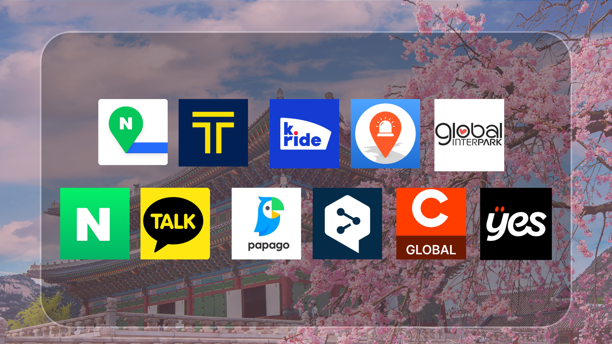
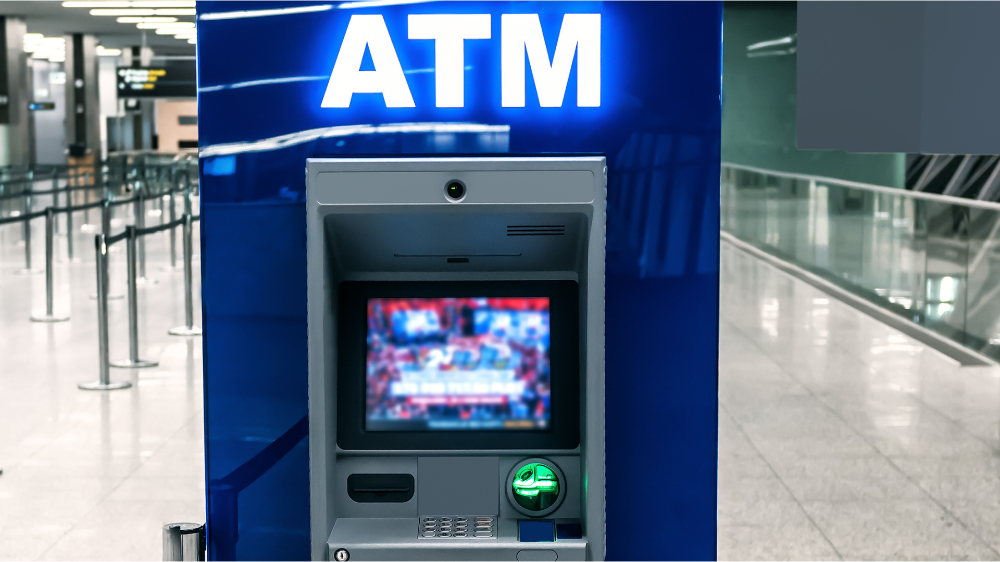
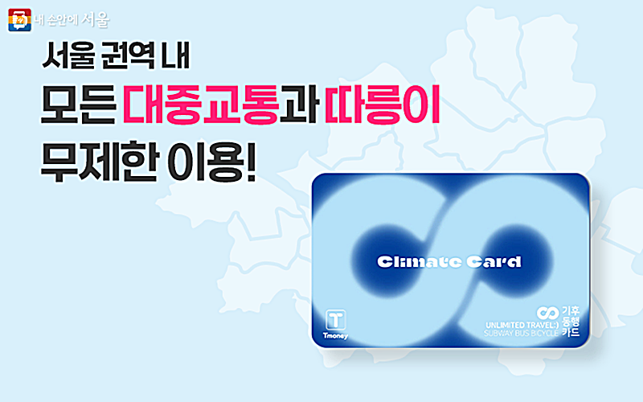
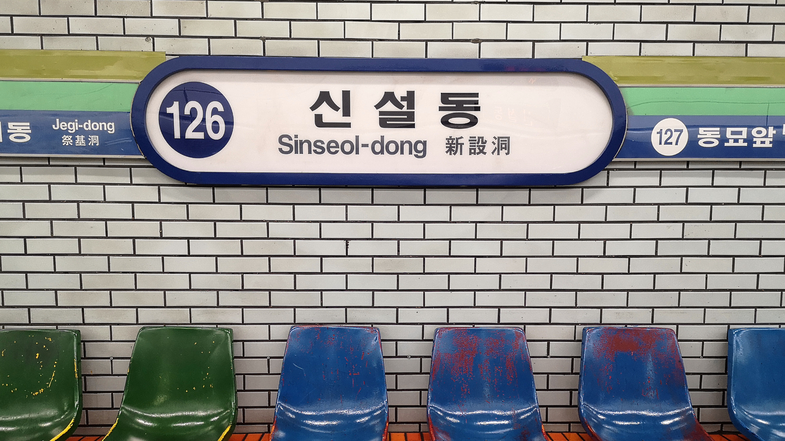

Les indispensables pour partir en Corée du Sud

C'est décidé, direction la Corée du Sud ? Mais comment bien préparer ce voyage ? Voici les étapes incontournables à suivre pour réussir son séjour.
ESIM - CARTE SIM
Il est possible d'acheter ses cartes SIM directement à l’aéroport auprès des stands de services téléphoniques locaux tels que : SK Telecom (SKT), KT, et LG U+. Une autre option est de réserver à l’avance une carte SIM avec Chingu Mobile ou les autres services téléphoniques locaux qu’il faudra simplement récupérer à l’aéroport.
Il y a également la possibilité de se renseigner auprès de son opérateur téléphonique. Mais attention, la data internet est le plus important pour le bon déroulement du voyage !
L'eSIM reste une excellente alternative : c'est une carte SIM virtuelle qui s’ajoute directement au téléphone. Elle est vendue par des opérateurs sur internet, mais il faut bien vérifier que l'appareil soit adapté pour prendre la eSIM. Enfin, la Wi-Fi de l’aéroport de Incheon est en libre-service pour aider à s'orienter avant de partir en route vers Séoul !
APPLICATION

Voici une sélection d’applications à avoir pour voyager en Corée du Sud :
- À avoir impérativement : Naver Map, Google Maps étant mal répertorié en Corée du Sud. Attention, il faudra parfois indiquer les adresses en coréen.
- Un traducteur tel que Papago ou DeepL.
- K.ride ou KakaoT pour les taxis, et Subway Korea en complément de Naver Map.
- Pour communiquer avec ses proches, il vaut mieux prioriser les applications de messagerie en ligne classiques : Messenger, WhatsApp, etc. Les Coréens utilisent généralement KakaoTalk, mais ce n’est pas obligatoire si l'on ne compte pas faire d’événements sous réservation.
- Emergency Ready App, qui traduit en temps réel les alertes en coréen et donne les localisations des hôpitaux les plus proches.
- Naver, pour être au courant des dernières actualités et des événements en Corée du Sud. L’application marche comme un explorateur internet. Cependant, la majorité des contenus est en coréen.
- Pour les événements et concerts, il y a : Interpark Ticket et YES24 Ticket.
Attention, beaucoup de restaurants populaires et de Pop-up stores proposent des files d’attente en ligne qui demandent un numéro coréen. Dans ce cas, il est possible soit de voir avec le staff pour expliquer la situation, soit de passer par l’application Catch Table.
MONNAIE
La monnaie de la Corée du Sud est le Won ₩, ($1€ \approx 1\ 460\text{ wons}$)
Pour s'y retrouver facilement sur place, il est conseillé de mémoriser la valeur en partant du won :
- 50 000 ₩ : 34.20€
- 10 000 ₩ : 6.80€
- 1 000 ₩ : 0,68€
Il est très facile de se procurer des espèces en Corée du Sud : il suffit de se rendre à un ATM dans la rue, en supérette ou directement dans une banque coréenne pour effectuer un retrait.

Le liquide reste important en Corée ! Il est indispensable pour payer les transports en commun et faire ses achats dans certaines petites boutiques dont le TPE n’est pas adapté aux cartes étrangères (ce qui devient très rare aujourd'hui).
Attention également aux paiements par carte : Apple Pay ne passe pas toujours ou très peu en Corée, les commerces étant habitués à utiliser Samsung Pay. Il est donc conseillé de partir avec une carte Visa physique. Il faut veiller à vérifier ses plafonds de paiement et de retrait avant le départ, ainsi que les frais bancaires applicables hors Europe. Pour éviter ces frais, opter pour une carte internationale (type Globe-Trotteur) est souvent préconisé.
METRO
A Séoul, profitez de la Climate Card : carte vous permettant de prendre le bus et le métro dans Séoul sous forme d’abonnement par période. Attention : elle n’est utilisable que dans la zone de la capitale et ne comprend pas la ligne Sinbundang, le train rapide AREX, ni les bus hors zone de Séoul.
En dehors de Séoul et à l’aéroport d’Incheon, priorisez la T-money, étant donné que la Climate Card ne passe pas dans ces zones. La T-money fonctionne comme un portefeuille électronique rechargeable : vous mettez de l'argent dessus, et vous êtes débité à chaque trajet.
Comment se procurer la T-money et la Climate Card ? Dans les supérettes telles que : GS25, CU, 7-Eleven à l’aéroport.
Vous pouvez demander en anglais ou en coréen : “tmoney han jang jousseyo, climate card han jang jousseyo”.
Vous pouvez également demander à recharger la T-money auprès des vendeurs avant de prendre le métro : “T money Choung-jeon-hé jousseyo”.
A noter : on ne peut acheter et recharger ces cartes qu’avec de l’espèce (la Climate Card peut cependant être rechargée par carte bancaire sur les bornes de métro).
Pour la Climate Card, vous devez attendre d’arriver à Séoul pour la recharger sur des bornes.

TRANSPORT

Dans le métro coréen, il y a des règles à respecter. Tout d’abord, veillez à faire la queue lorsque vous attendez le train. Les passagers descendant sont prioritaires. Vous pourrez y retrouver des places roses, destinées aux femmes enceintes, il ne faut surtout pas vous asseoir dessus. Les sièges sont priorisés pour les femmes enceintes, les personnes en mobilité réduite et les personnes âgées.
Les espaces de transports sont généralement silencieux, donc veillez à parler doucement et à ne pas répondre au téléphone dans le métro. Il est également déconseillé de manger ou boire dans les infrastructures, ainsi qu’interdit de monter dans les bus de Séoul avec des boissons ouvertes ou de la nourriture.
Si vous venez à prendre le bus, veillez à prioriser le paiement avec vos cartes de transport : T-money et Climate Card dans Séoul. L’espèce est déConseillée pour faire gagner du temps au chauffeur. Accrochez-vous bien, les conducteurs conduisent plus rapidement qu'en France.
Pour les taxis, vous pouvez passer par les applis : KakaoT, Uber, ou K.ride. Les taxis oranges, blancs ou gris sont les taxis standards. Les taxis noirs avec une bande dorée sont des taxis "Deluxe". Veillez à bien indiquer votre adresse de destination en coréen.
Attention pour KakaoT : vous ne pouvez pas payer en ligne si vous ne possédez pas de numéro de téléphone coréen. Au moment de commander votre taxi, vous devez balayer l'écran des paiements vers la gauche et sélectionner impérativement l'option "Pay to the driver" (Payer au chauffeur). Ainsi, vous paierez à la fin de la course directement dans la voiture avec votre carte bancaire physique, de l'espèce, ou votre carte T-Money.
Envie de découvrir la Corée du Sud ?
Si vous voulez découvrir l’ensemble de la Corée du Sud sans vous prendre la tête, vous pouvez partir avec Eurasia tours
👉 Découvrez notre circuit : Au cœur de la Corée éternelle